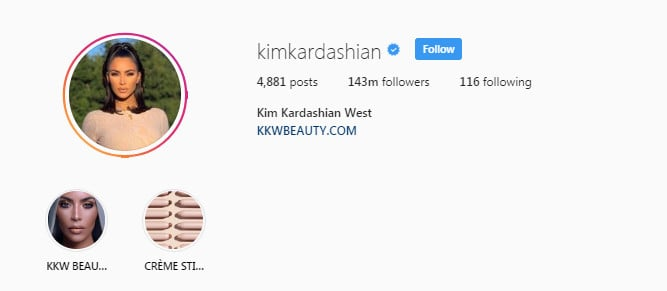
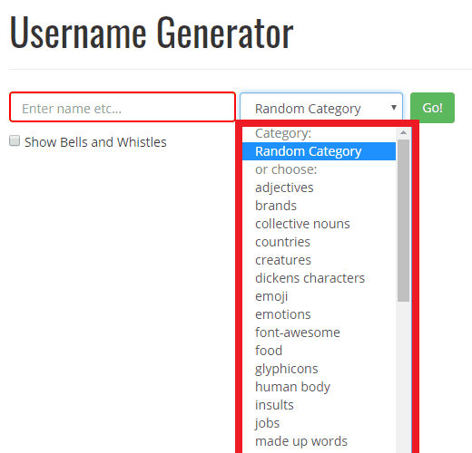
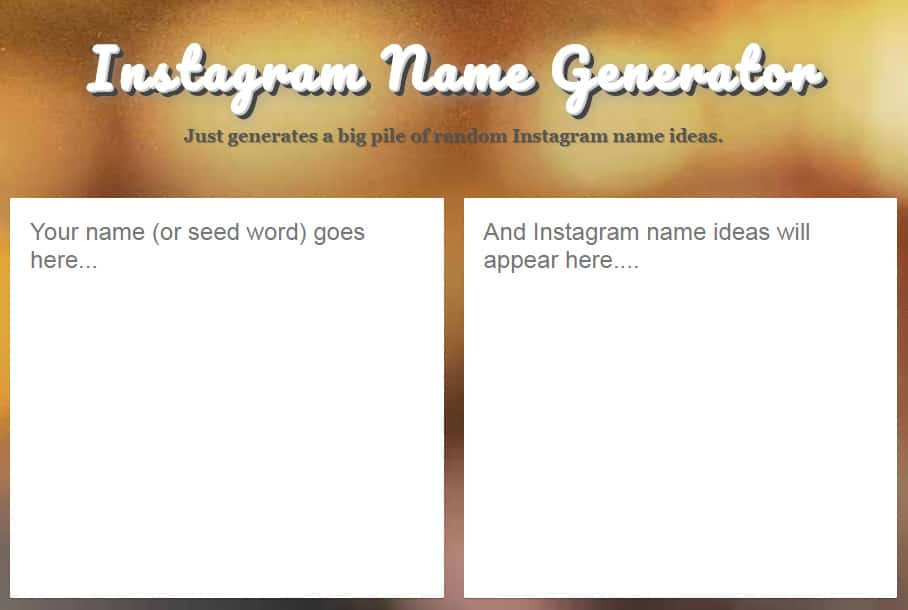

Do you need an Instagram name generator to give you some IG inspiration?
Don’t worry, we’ve got you covered.
Your Instagram username is one of the most valuable assets you have on social media. It dictates your digital identity, determines your Instagram URL, and even makes it easier to form deeper connections with your target audience.
However, if you want your name to have the right impact, you’ll need to choose it with care.
Now that Instagram has 1 billion monthly active users, it’s very difficult to find a username that hasn’t already been taken. If you’ve spent days, or even weeks brainstorming suggestions and still haven’t come up with something that’s Instagrammable, then the following tips, username generators, and insights will help.
Changing your Instagram Username: Pros and Cons
Before you start plugging ideas into an Instagram name generator, it’s worth thinking about what your username means to your Instagram account.
Crucially, your username is the thing that appears after the @symbol when someone searches for you on Instagram. It’s also the phrase at the end of your Instagram URL. For instance, Kim Kardashian’s username is @KimKardashian, but her Instagram name or business name is Kim Kardashian West.

Since your username or handle is the first thing people look for when they’re trying to find you on Instagram, it’s essential to get it right.
While Instagram does allow you to change your username if you no longer like it, there are some problems with this strategy. For instance, any shoutouts with hashtags rather than @mentions created with your old name won’t update on influencer and partner accounts. Additionally, the more you change your username, the more you’ll confuse your audience, creating issues with brand recognition.
Changing your Instagram username also means that any links on other websites that link back to your page, or copies of your handle on printed brand materials won’t lead anywhere. In other words – it’s a bigger job than you’d think.
The best option is to avoid the change and get your name right first time around.
Top Tips for Choosing your Instagram Username
To ensure that you don’t have to waste time and money changing your Instagram username a few years after you start your account, use the following steps to prepare yourself for making the right choice first-time around.
1. Choose the Right Username Style
There are different kinds of name that you can choose from depending on the type of Instagram account that you’re running. For instance. If you’re running a business profile, you’ll need a very different kind of name compared to if you’re managing a personal account.
- For personal accounts, keep your name as close to your own name as possible. The idea is to let your reputation do the talking for your profile. Look at @GaryVee, for instance.
- Business accounts, stick to either your company’s title or something related. For instance #WayfinderSigns or #WayfinderProducts
- Curation accounts, use a name that describes what you’re going to be focusing on. For instance, if you’re sharing inspirational quotes, you might use @PowerOfPositivity or #InstaInspiration
2. Make your Instagram Username Relevant
Whatever the kind of Instagram profile you’re running, it’s essential to make sure that your name is relevant. If you’re not relying on your personal or professional brand to tell your audience what your account is all about, try to give them a hint in your username instead.
For instance, it’s easy to guess what the account @iam.pugcrazy would be focusing on.
If you’re struggling for inspiration for a curated or influencer account, think about the kind of content you’re going to produce for your audience, and what themes you’ll be looking at. This will help you a great deal when it comes to using a username generator.
3. Do your Homework
Before you start looking for an Instagram name generator, it’s essential to understand what kind of names are going to speak to your audience. For instance, it might help to examine some of the titles that belong to leading companies or individuals in your niche. What sort of words and themes have they focused on?
Consider your target audience too. What sort of words will they be searching for when they start looking for content on Instagram? You can look at trending hashtags to help you out here. Any phrase that gets a lot of material and searches is sure to attract attention when used in a username.
It’s also worth making a list of any inappropriate words that you don’t want to use in your name. Some words seem perfectly innocent until you put them into an Instagram username and your audience starts issuing complaints. Get a selection of people to read your name out loud to make sure it’s safe.
The Best Instagram Name Generators
Now you’re ready to start using your username generator to gather inspiration.
Remember, not all of the names that you generate from these automated tools will be effective. You’ll probably end up with hundreds of choices, but only a handful that will appeal to your audience. Keep it simple by getting rid of anything that is:
- Difficult to spell
- Longer than 9 characters
- Riddled with punctuation and underscores
- Differentiated by a number
- Marred by offensive language.
With those rules in mind, check out the following tools:
1. SpinXO
SpinXO is a fun and simple username generator, intended to give you some basic ideas to start with when you’re creating your social media accounts. You enter a handful of details, like your nickname, your hobbies, things you like and essential words, and the algorithm will spit out 30 potential Insta names.
Keep in mind that some of these names may already be taken, so you’ll need to check their availability. Additionally, we’d recommend not using the “numbers” option, as this will reduce the quality of the titles you get.
2. Jimpix
Jimpix is another easy-to-use Instagram name generator that allows you to enter a name or keyword and choose from a wide range of categories. The categories available help to ensure that your name remains relevant to your target audience. However, you can choose to pick a name entirely at random too – though we’d recommend against that.

There’s nothing particularly complicated about this tool, which makes it great for people who don’t have a lot of experience with online apps. Once again, you’ll need to check the availability of any titles generated for you, however.
3. Username Generator
Username generator is a tool that wasn’t designed specifically for Instagram. Instead, this software works to deliver usernames regardless of what tool or app you’re using. You can choose from a host of pre-established “cool” and “funny” usernames that are listed on the website homepage. Alternatively, there’s the option to enter your name or a keyword and have the algorithm deliver something new.
There are specific categories reserved for people in search of an Instagram username. What’s more, you can save names that you like to a list if you want to keep searching for a while before making your choice. This tool will also helpfully count the number of characters in your name – so you don’t go over Instagram’s limits.
4. Lingojam
Lingojam is another Instagram name generator that makes coming up with unique titles easier for people who want to make the most out of their social profile. The user interface might not be the most attractive thing you’ve seen online – but it gets the job done. You can add a seed word (keyword) or your actual name to the first box on the site, and the second box will automatically show suggestions based on what you enter.

Lingojam is one of the simplest name generators online, and it comes with options to enter tips on how you think the software can be improved if you have any advice.
5. Username Buddy
Finally, Username buddy is a random name generator that you can use for Instagram, your email address, or virtually any other site that requires a digital identity. The tool uses a basic algorithm to throw random words and letters to create something unique that you can use online. Unlike other username generators, this option allows you to choose a separate suffix and prefix for your name.
That means that you can combine multiple words into one title, rather than working off a single keyword. Username buddy also offers the opportunity to choose a starting letter if you want to make sure that your title begins a specific way. You can also look for names that include linguistic features like alliteration, to make your choice more memorable.
What to Do After Choosing your Instagram Username
Once you’ve collected a wide range of ideas from your username generator, you’ll still have a bit of work to do before you begin building your Insta strategy. For instance, it’s essential to check that your Instagram username is available first, by searching for it online making sure that it hasn’t been claimed or trademarked elsewhere.
It’s also worth running your name by several members of your team if you’re launching an Instagram profile for your business. This will ensure that the title you choose makes sense and that there’s no spelling mistakes or embarrassing errors that you’ve looked over.
If you’re changing your username after having already established your presence on social media, then there’s even more work to do. For instance, you’ll need to:
- Update all of your other social media profiles and blog information to ensure that your name is consistent and accurate across the web.
- Update your Instagram handle on any newsletters or guest posting bios that you use online.
- Make sure you ask any influencers you’ve worked with recently to update their hashtags and mentions of your brand.
- Change any branded hashtags on your website to suit your new username where necessary.
- Make sure that your users have the right information for any contests or promotions you have scheduled now or in the coming weeks.
- Update any printed materials or offline assets that contain your Instagram handle
One good piece of news is that when you upgrade your Instagram username, the Instagram algorithm will also automatically update your username when it’s mentioned in a tag. This ensures that you don’t have to replace and update all of your existing content.
However, this doesn’t apply to any branded hashtags you’ve been using to collect user-generated content. If your current hashtags are no longer relevant, you’ll need to run a campaign asking your customers to change the tags they’ve been using.
Improving your Instagram Username
Your Instagram username or handle is more important than most people realize.
On a visual channel like Instagram, it’s easy to assume that so long as you’re publishing the right material, nothing else matters. However, the truth is that there are many different things that come together to create a successful Instagram presence. Your complete profile, including your pictures, Instagram bio, username, and more will help you stand out online.
Fail to get all of your Instagram profile right, and you risk losing the attention of your target audience, and the respect of your existing followers.
The good news is that there are ways to get inspiration if you’re struggling. Instagram name generators can give you a starting point and act as a crucial muse. You could even use all of the tools we mentioned above to get the widest selection of suggestions.
Good luck finding the right username. Remember, you can always rely on SocialFollow for tips and tricks on how to get the most out of your Instagram strategy. Subscribe today to stay up-to-date with our latest posts, articles, and guides.